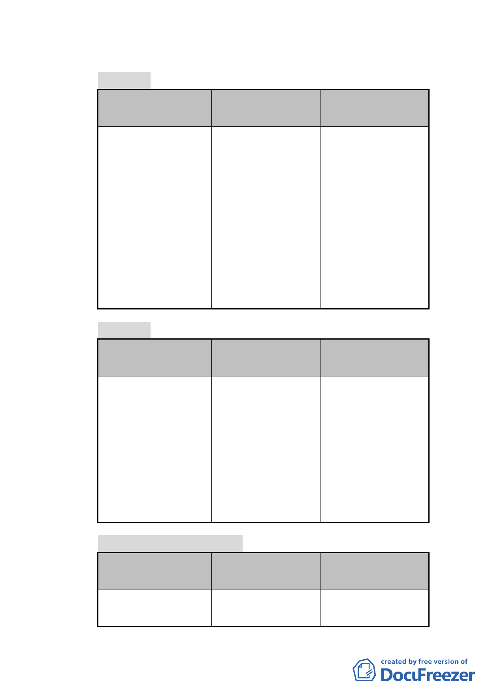

專案小組審查意見修正完成，修正重點包括以下幾點：
（一）計畫名稱
公展計畫
本次修正計畫
說明
變更臺北市中正區永 變更臺北市中正區永 本項係依專案小組
昌段四小段 48 地號 昌段四小段 48 地號 審查意見修正。
等 101 筆土地第 3 種 等 50 筆土地第 3 種住
及第 3 之 1 種住宅區 宅區為第 3 種住宅區
為第 3 種住宅區（特）（特）、修訂同小段
及第 3 之 1 種住宅區 46-7 等 69 筆土地第 3
（特）暨劃定周邊地 之 1 種住宅區為第 3
區為都市更新地區計 之 1 種住宅區細部計
畫案。
畫暨劃定都市更新地
區案。
（二）計畫面積
公展計畫
本次修正計畫
說明
5105.55 平方公尺 1.5100.55 平方公 本項修正係因應市
尺。
府最新地政資料配
2. 釐 清 本 案 計 畫 範 合修正計畫書有關
圍、更新單元範圍 計畫區面積、土地地
以及臺北好好看開 號數目及公私有土
發範圍，均屬同一 地所佔比例等相關
區域。計畫書相關 文字。
文字配合修正。
（三）土地使用分區及管制內容
公展計畫
本次修正計畫
說明
1. 住 三 變 更 為 住 三 住 三 變 更 為 住 三 1.本項規定係為保
（特），除原住三允 （特），除原住三允 留現有龍興宮。
- 19 -